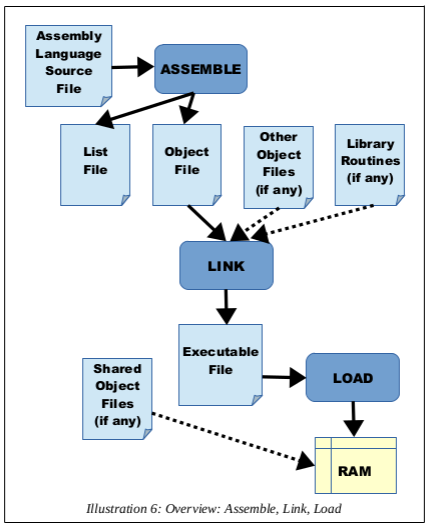
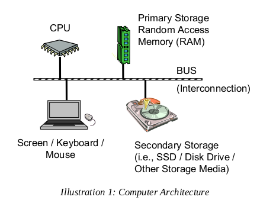
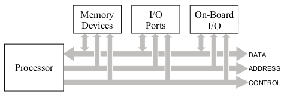

CPSC 220, Nov. 11
About the Test
2b) Call this function
long int guess(long int x, long int y, long int z)
with arguments 27, 93, and 101, then copy return value to r15
Answer:
mov rdi, 27
mov rsi, 93
mov rdx, 101
call guess
mov r15, rax
2c) Register rax contains the address of an array of three 32-bit integers.
Add them up.
Answer:
mov eax, [rax]
add eax, [rax + 4]
add eax, [rax + 8]
3) Translate to assembly:
Answer:
long int sumOfBigger( global sumOfBigger
long int A[], sumOfBigger:
long int count, mov r12, 0 ; This is i.
long int limit) { mov r13, 0 ; This is sum.
long int i = 0; .while:
long int sum - 0; cmp r12, rsi
while ( i < count ) { jge .done
if ( A[i] > limit ) { cmp [rdi + r12*8], rdx
sum = sum + A[i]; jle .next
} add r13, [rdi + r12*8]
i = i + 1; .next:
} inc r12
return sum; jmp .while
} .done:
mov rax, r13
ret
4) 64 bits can be a signed integer, an unsigned integer, 8 characters, etc. How does the
computer know the difference?
points to make: The computer doesn't know the difference. On the machine language
level, it does not keep track of data types for values stored in
memory. The only thing that determines the meaning of the data is
how they are used in a program. When you add a value from memory
to a 64-bit register, it had better represent a signed or unsigned
64-bit integer.
6) The Larc register file needs at least three 4-bit inputs for selecting registers. Explain:
points to make: The register file contains 16 registers, so 4 bits can pick out one register.
One 4-bit input is used to select the register that data will be written to.
At least two 4-bit inputs are needed to select registers for output; this
is because some Larc instructions, such as ALU instructions use the values
from two registers.
9) Explain "assemble", "link", and "execute".
points to make: The assembler converts assembly language instructions in to machine language
instructions and outputs them in an object (.o) file. However an object
file is not a complete program.
The linker links one or more object files into a complete program in the
correct format for an executable program. This allows an object file to
access labels that are declared extern in other files.
When the executable program is run, it is loaded into memory and starts
executing (at the point marked by the _start label in assembly)

(from Jorgensen, page 7)
About Lab 12
Were there questions about the lab or the sample programs?
Some notes on the full ABI Function Calling Sequence. (ABI = "Application Binary Interface")
- The rax technicality for passing floats to varargs functions in xmm registers: rax "with variable arguments passes information abou thenumber of vector registers used" (register usage, page 46)
- Full list of generally accessible registers (p. 20):
- the 16 general purpose 64-bit registers
- 16 vector / floating point 128-bit registers, xmm0 to xmm7
- 8 x87 floating point 80-bit registers
- "Advanced Vector Extensions" extends the xmm registers to ymm (256 bits) and zmm (512 bits)
- In addition to primitive and array types, C has "struct" data types, which can be parameter and return types.
2D Arrays and Macros
An ordinary (one-dimensional) array is easy to work with in assembly
Get item from an array LIST, if item number is in r12
mov rax, [LIST + r12*8]
mov eax, [LIST + r12*4]
mov ax, [LIST + r12*2]
mov al, [LIST + r12]
Put an item into an array, if r12 is the item number
mov [LIST + r12*8], r15
mov [LIST + r12*4], r15d
mov [LIST + r12*2], r15w
mov [LIST + r12], r15b
-------------------
We think of a 2D array in Java or C like this:
A[0][0] A[0][1] A[0][2] A[0][3]
A[1][0] A[1][1] A[1][2] A[1][3]
A[2][0] A[2][1] A[2][2] A[2][3]
A[3][0] A[3][1] A[3][2] A[3][3]
But computer memory is not 2D. In C, the items would actually
be laid out linearly, row-by-row, like this:
A[0][0] A[0][1] A[0][2] A[0][3] A[1][0] A[1][1] A[1][2] A[1][3] . . . A[3][3]
How to find A[r][c] in general???
(address of A) + r*(size of a row) + c*(size of an item)
( (size of a row) = (number of items in row)*(size of an item)
= (number or columns)*(size of an item) )
Example: Suppose in C we have
long int A[20][10];
What's the address for A[7][5]? -- the offset from the start of A is (10*7+5)*8
You can actually do: mov rax, [A + (10*7+5)*8]
(constant expressions can be used where constants would be used)
But for A[r12][r15], you CAN't do: [A + (r12*10+r13)*8]
(the expression is too complicated for one machine language instructions)
So we might do:
mov rbx, r12
imul rbx, 10
add rbx, r13
imul rbx, 8
add rbx, A
mov rax, qword [rbx]
This would get painful if we want to do something non-trivial with a 2D array...
This calls for MACROs! (Chapter 11 in Jorgensen)
%macro get 4 ; Use like get A, rax, 7, 5
mov rbx, %3
imul rbx, 10
add rbx, %4
imul rbx, 8
add rbx, %1
mov %2, qword [rbx]
%endmacro
See the sample byte array program!!
byte-array.asm
byte-array-static.asm
Why are we doing this? LIFE
(Also see the WebGL version.)
What's Next?
Overview of some more advanced computer architecture topics.

(from Jorgensen, page 7)

(from Tarnoff, page 332)
Topics:
- Multiprocessing. (Jorgensen, Chapter 19)
- Interrupts. (Jorgensen, Chapter 20)
- Virtual Memory and Paging
- Pipelining in CPU's
(What can people in CPSC 329 tell us about threads and parallel processing?)
Processes and Threads
Shared resources and race conditions
Synchronization and Mutual Exclusion
The "LOCK" attribute in assembly language and the XCHG instruction.